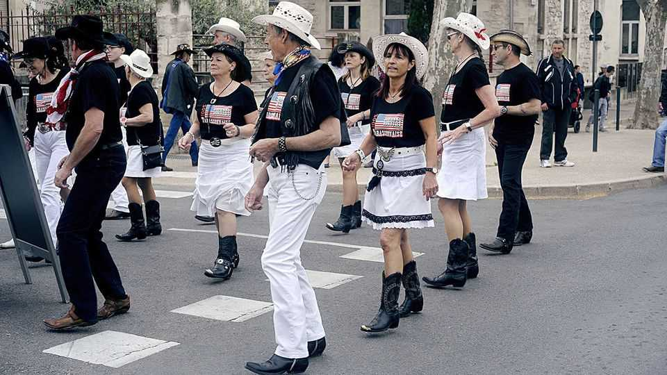

Why France has fallen for la danse country
Outside the snobbish capital, American line-dancing is huge

Aug 20th 2026
SUMMER in rural France is a time for street fêtes, jugs of chilled rosé—and American line-dancing. To get locals on their feet, a DJ need only utter the words “Le Madison”, a line-dance that originated in America’s Midwest in the 1950s, and villagers will step into row formation. The Francophone Federation of Country Dance and Line Dance lists over 500 clubs nationwide, with such names as American Spirit Country or Froggy Stomp. Another count records over 2,000 “danse country” groups. A poll suggests that nearly one in ten French adults has taken part in line-dancing. In May France held a national line-dance “open”, in the southern town of Salon-de-Provence.
In Camaret-sur-Aigues in the Rhône valley, a town of just 4,500 inhabitants, American Spirit Country holds two classes of line-dancing and le country each week. Participants range from ten years old to 73. Some turn up in Stetsons and cowboy boots; others, jeans and trainers. “In the past two years le line has really taken off,” says Zorah Lesbros, president of the club, who observes a burst of interest among the young. “People of any shape and size can do it, you make friends, and it’s fun.”
What explains this unexpected passion for a slice of Americana? France thinks of itself as a place of highbrow culture and artistic sophistication. Charles de Gaulle invented the Ministry of Culture in 1959 to bring such art to all. In reality the country has long held a secret fascination for American popular culture. Of the top ten box-office hits in France last year, nine were American. In Johnny Hallyday, of part-Belgian descent, France had its own wildly popular Elvis. Disneyland Paris is Europe’s only outpost of the theme park. At its Disney Village, Billy Bob’s Country Western Saloon holds line-dancing events.
The craze also speaks to places that the Paris political elite tend to overlook—at their peril. A study of la danse country by Jérôme Fourquet and Sylvain Manternach, two political analysts, notes a geographical and social correlation between its appeal and the roundabouts in semirural areas where gilets jaunes protesters gathered in 2018. They suggest that such dancing supplies the solidarity that protesters also sought, albeit with a different objective.
Overall, nearly a quarter of the French say they are “attracted” to the culture of America’s West. “La danse country,” the authors write, “is totally unknown to elite France and when it is referred to it is mostly in a sarcastic way.” Populist politicians, including Marine Le Pen, the leading presidential candidate at next spring’s election, tend to be better tuned in. She has even been spotted in a Stetson, and periodically sings along at rural events.
Some longtime French devotees will know “Le Madison” from a scene in Jean-Luc Godard’s 1964 film “Bande à Part”. More recently, it is the success of modern country-pop that has drawn new recruits. French line-dancing tutorials on YouTube are set to Taylor Swift songs. One on how to dance “Le Madison” has over 1m views. Away from parquet-floored Paris, at outdoor summer bals, the real ingredient for a successful event is when the secret thrill of an American cultural hit meets rural French tradition.■